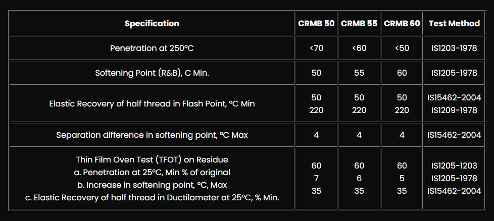

What Is Crumb Rubber Modified Bitumen CRMB 55? – Iran Bitumen Supply │ IBITMCO
Crumb Rubber Modified Bitumen CRMB 55 is a high‑performance, elastomer‑enhanced bitumen designed for moderate‑climate regions where pavements must withstand continuous traffic loading, temperature variations, and long‑term fatigue. Produced by blending premium paving‑grade bitumen with finely processed crumb rubber from recycled tires, CRMB 55 offers superior elasticity, improved resistance to cracking, and enhanced durability compared to conventional bitumen. At Iran Bitumen Supply │ IBITMCO, CRMB 55 is engineered to deliver exceptional performance in road networks exposed to moderate temperatures and medium‑to‑heavy traffic volumes. The rubber modification increases the binder’s flexibility at lower temperatures while significantly improving its resistance to rutting and deformation at higher temperatures. This makes CRMB 55 a preferred choice for regions where pavements must balance flexibility and stiffness throughout the year. CRMB 55 is widely used as an advanced binder for high‑quality asphalt mixes, offering longer service life, reduced maintenance costs, and improved ride quality.
Applications of Crumb Rubber Modified Bitumen CRMB 55
CRMB 55 is primarily used in road construction where pavements must endure repeated loading, braking, and turning forces. It is ideal for highways, urban roads, and regional routes in climates that experience moderate seasonal temperature changes. The enhanced elasticity of CRMB 55 helps pavements resist reflective cracking, thermal cracking, and fatigue, making it suitable for both new construction and rehabilitation projects. In addition to roadways, CRMB 55 is used in bridge decks, intersections, and roundabouts, where asphalt is subjected to concentrated stress. Its improved adhesion to aggregates ensures a dense, stable asphalt mix with excellent resistance to moisture damage. CRMB 55 is also used in industrial pavements, logistics zones, and areas where asphalt must withstand moderate‑to‑heavy axle loads without premature deterioration.
Properties of Crumb Rubber Modified Bitumen CRMB 55
CRMB 55 is characterized by its balanced performance profile, offering both flexibility and stiffness suitable for moderate climates. The addition of crumb rubber increases the binder’s viscosity, allowing it to maintain structural integrity under traffic and temperature stress. Its softening point is significantly higher than standard paving‑grade bitumen, ensuring stability during warmer months, while its elastic recovery helps prevent cracking during cooler periods. The penetration value of CRMB 55 is lower than that of unmodified bitumen, indicating a harder and more resilient binder. Its elastic recovery and resilience make it ideal for pavements exposed to repeated loading cycles. These properties collectively contribute to longer pavement life, reduced rutting, and improved resistance to fatigue.
Packing Options for CRMB 55
At Iran Bitumen Supply │ IBITMCO, Crumb Rubber Modified Bitumen CRMB 55 is available in several packaging formats to accommodate different project scales and logistical needs. It can be supplied in new steel drums, Bitubags, or bulk shipments for large‑scale infrastructure projects. Bulk deliveries are typically made via bitumen carriers or tanker trucks, ensuring a continuous and efficient supply to asphalt plants.

Specification of CRMB-50-55-60